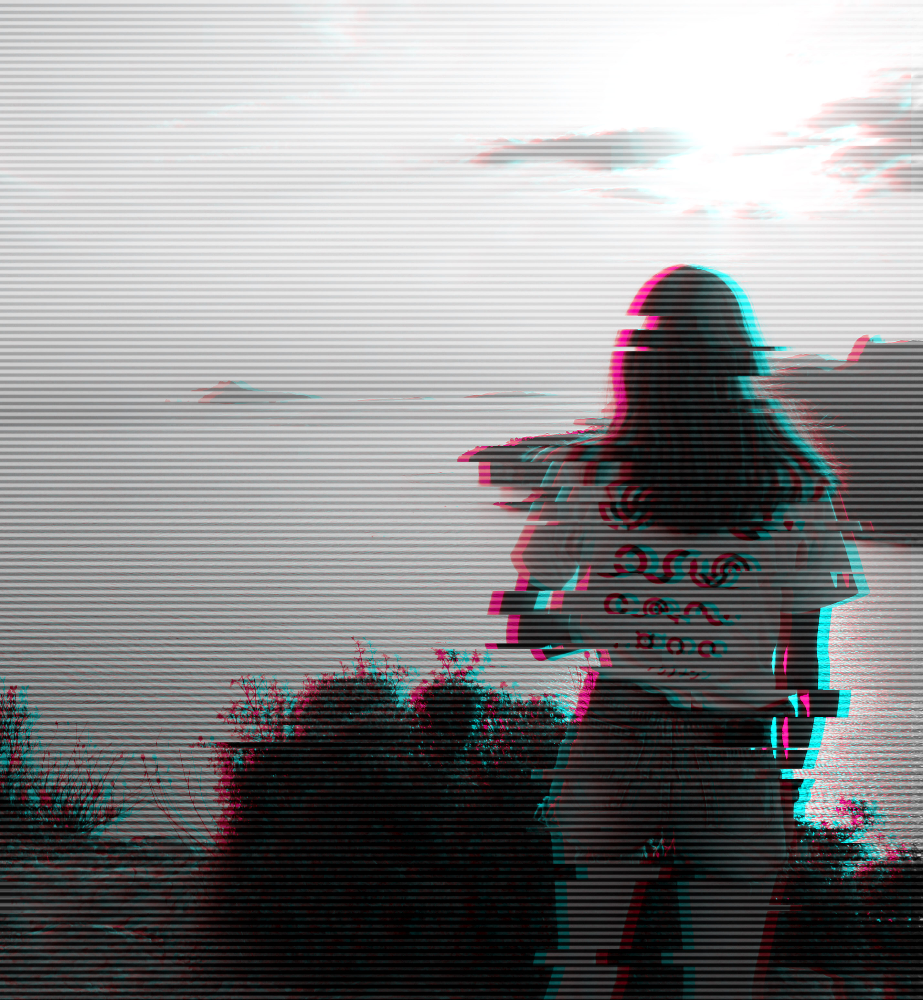

Personnel
 Moi c'est Deborah ! J'ai 21 ans et ce qui me passionne dans la vie c'est le dessin et les jeux vidéo principalement. Mais je passe aussi beaucoup de temps à lire, écouter de la musique ou voir des films, rire avec mes amis et manger.
Je passe la majeure partie de mon temps libre à créer un pont entre mes passions et mes études en continuant de dessiner mais aussi en jouant aux jeux vidéo et en essayant de comprendre comment leurs univers se façonnent et se croisent. Ces passions sont pour moi une façon de voyager de mille et une façons, d'explorer et de découvrir, de ressentir, de partager et de s'évader.
Si je dois faire une description personnelle alors je vais parler de mes qualités et de mes défauts. Je suis quelqu'un de passionnée quand j'aime quelque chose mais je peux avoir du mal à m'inpliquer dans un projet lorqu'il ne me plait pas. Je suis plutôt sérieuse malgrès ma tendance à être trop anxieuse. J'aime travailler en groupe, être à l'écoute des autres et partager, débattre sur des sujets qui m'interessent même si je n'ai pas vraiment confiance en moi.
J'ai commencé à me former en BAC Art Appliquée puis j'ai étudier 1 an en licence d'anglais. Je me suis ensuite ré-oriantée vers un DUT MMI que j'ai fait à Limoges.
Cette formation m'a formé dans les domaines du graphisme, du webdesign, du développement web et de la communication. Des domaines, pour certains, que j'ai eu l'occasion de décourvir et d'étudier durant mon BAC.
Elle m'a aussi permit d'effetuer un stage de 12 semaines à La Develloperie (Ester Technopole) où j'ai eu l'occasion de travailler sur de nombreux projets concrets et en intérraction avec un client réel. J'ai travaillé là bas en tant qu'intégratrice et graphiste et j'y ai appris Symfony.
Et après la licence j'aimerais étudier à l'enjmin dans le master conception visuelle pour ensuite devenir Concept Artist. Cela reste un projet, une idée et rien n'est encore sur dans ma tête.